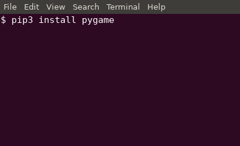
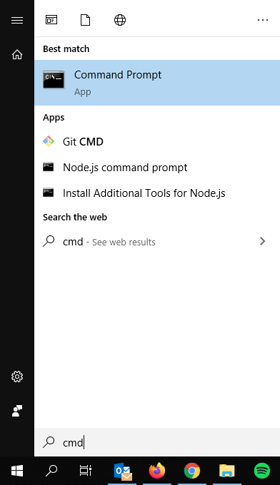
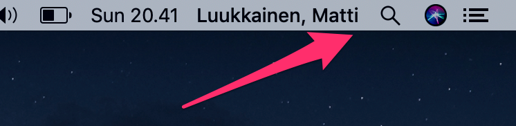
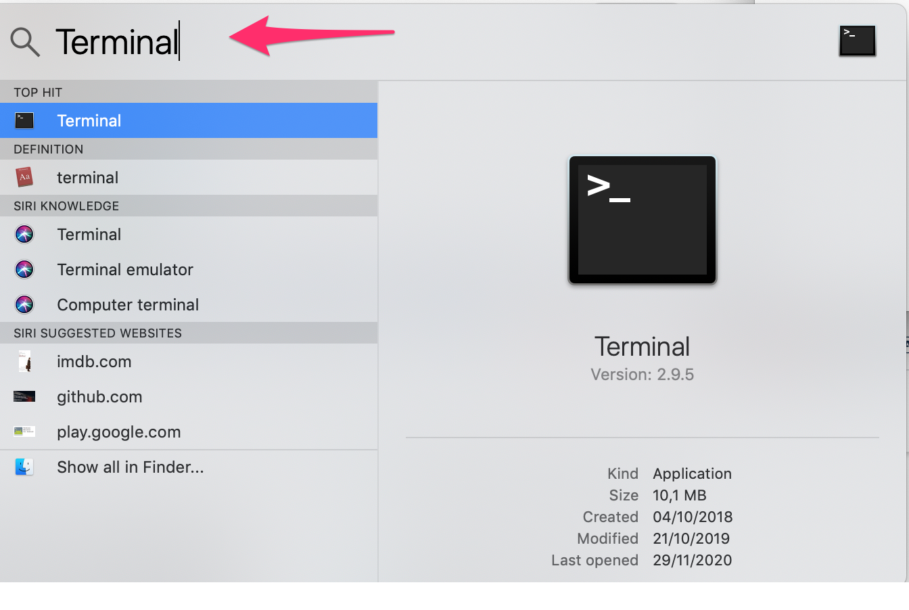
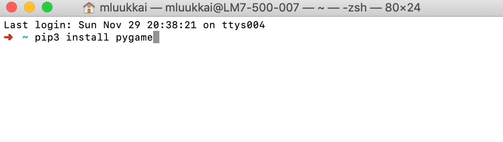
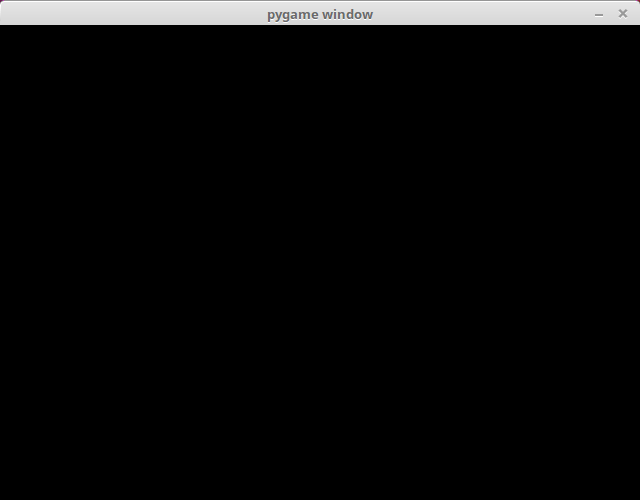
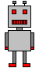
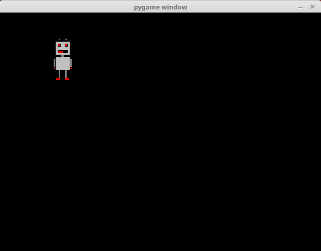
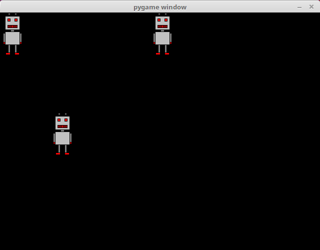
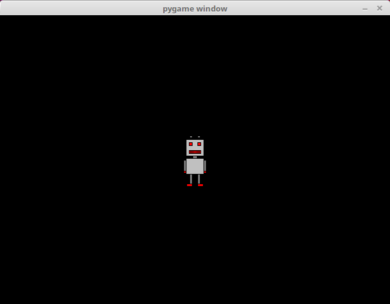

In these last two parts of this course material we will get to grips with the pygame library. It is a Python library for programming games. It helps you create graphical elements, handle events from the keyboard and the mouse, and implement other features necessary in games.
Open a command line, type in pip3 install pygame an press enter.

This should install the pygame library on your computer.
Open the Windows terminal by opening the menu, typing in cmd and pressing enter:

The command line interpreter window should open. Type in pip3 install pygame and press enter.
This should install the pygame library on your computer.
Installation may require system administrator privileges. If the above doesn’t work, you can try running the terminal application as an administrator: open the Windows menu, find the CMD application, right-click it and choose “Run as administrator”.
Installing and accessing pygame requires that your Python installation is added to path, as instructed here.
Open the Terminal, for example through the magnifying glass symbol in the top right corner:

The search tool should open. Type in terminal and press enter:

Type in the following and press enter:
pip3 install pygame

This should install the pygame library on your computer.
Here is a simple program for checking your pygame installation works correctly:
import pygame
pygame.init()
window = pygame.display.set_mode((640, 480))
window.fill((0,0,0))
pygame.display.flip()
while True:
for event in pygame.event.get():
if event.type == pygame.QUIT:
exit()
When this program is run, it should display a window:

The program only consists of displaying a window, and it runs until the user closes the window.
Let’s take a closer look at the steps required to achieve this. The first line takes the pygame library into use: import pygame. The next command pygame.init initializes the pygame modules, and the next one creates a window with the function pygame.display.set_mode.
pygame.init()
window = pygame.display.set_mode((640, 480))
The set_mode function takes the window dimensions as an argument. The tuple (640, 480) indicates that the window is 640 pixels wide and 480 pixels high. The variable name window can be used later to access the window, for example to draw something in it.
The following two commands do just that:
window.fill((0, 0, 0))
pygame.display.flip()
The fill method fills the window with the colour passed as an argument. In this case the colour is black, passed as an RGB value in the tuple (0, 0, 0). The pygame.display.flip updates the contents of the window.
After these initialization commands the main loop of the program begins:
while True:
for event in pygame.event.get():
if event.type == pygame.QUIT:
exit()
The main loop handles all events the operating system passes to the program. With each iteration the function pygame.event.get returns a list of any events collected since the previous iteration.
In the example above the program only handles events of type pygame.QUIT. This event is raised by, for example, clicking on the exit button in the corner of the window. If the pygame.QUIT event is raised, the program exits through the exit function.
You can try and see what happens if your program doesn’t handle the pygame.QUIT event. This should mean that clicking on the exit button does nothing, which would be confusing for the user. As the program is run from the command line, you can still stop it from the command line with Control+C.
Let’s add an image to the window:
import pygame
pygame.init()
window = pygame.display.set_mode((640, 480))
robot = pygame.image.load("robot.png")
window.fill((0, 0, 0))
window.blit(robot, (100, 50))
pygame.display.flip()
while True:
for event in pygame.event.get():
if event.type == pygame.QUIT:
exit()
The program uses this image of a robot, which is stored in the file robot.png:

The file robot.png has to be in the same directory with the source code of the your program, or the program won’t be able to find it. In the exercise templates for this part the images are waiting in the exercise directory.
The window should now look like this:

The function pygame.image.load loads the image in the file robot.png and stores a reference to it in the variable named robot. The method blit draws the image at the location (100, 50), and the function pygame.display.flip updates the window contents, as before. The location (100, 50) means that the top left corner of the image is at that location within the window.
In pygame the origo point (0, 0) is in the top left corner of the window. The x coordinates increase to the right, and the y coordinates increase downwards, so that the bottom right corner has the coordinates (640, 480). This is contrary to how coordinates are usually handled in e.g. mathematics, but it is quite common in a programming context, and worth getting used to.
Once you have loaded an image, you can use it many times within the same window. The following code draws the image of the robot at three different locations:
window.blit(robot, (0, 0))
window.blit(robot, (300, 0))
window.blit(robot, (100, 200))
The window should look like this as a result:

Here we set the location of the image so that it lies at the centre of the window:
width = robot.get_width()
height = robot.get_height()
window.blit(robot, (320-width/2, 240-height/2))
The window should now look like this:

The method get_width returns the width of the image, and the method get_height returns its height, both in pixels. The centre of the window is at half its width and height, so at (320, 240), which we can use to calculate a suitable location for the top left corner of the image, so that it lies exactly at the centre.